Treadmill Run
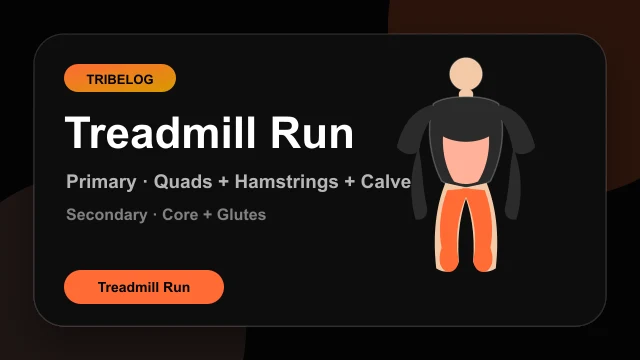
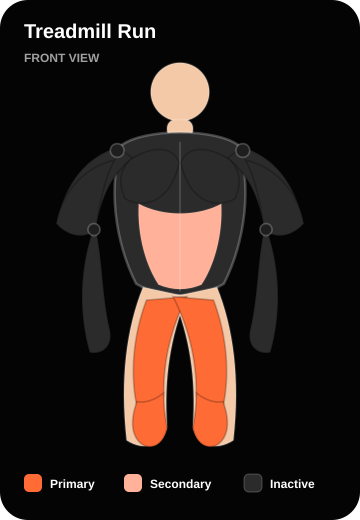
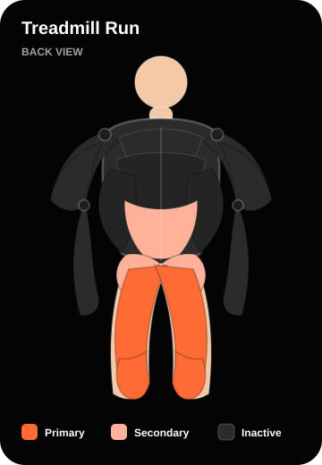
workouts/exercises/v1/treadmill_run/demo.lottie.jsonIncline Walk
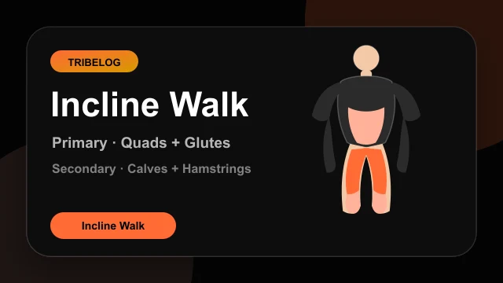
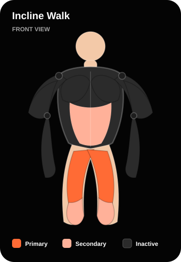
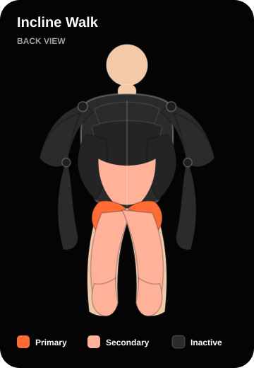
workouts/exercises/v1/incline_walk/demo.lottie.jsonStationary Bike
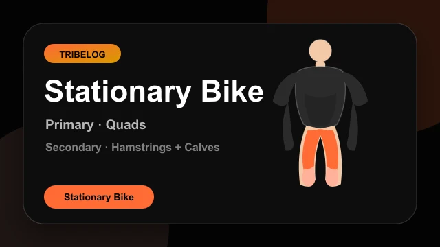
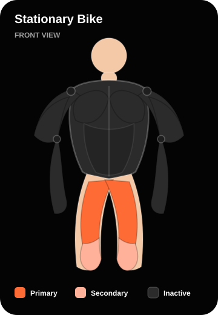
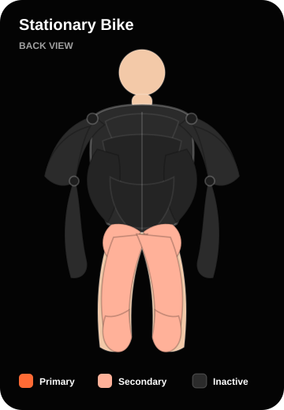
workouts/exercises/v1/stationary_bike/demo.lottie.jsonRowing Machine
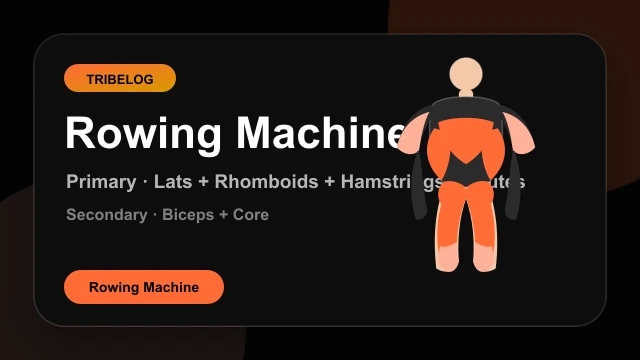
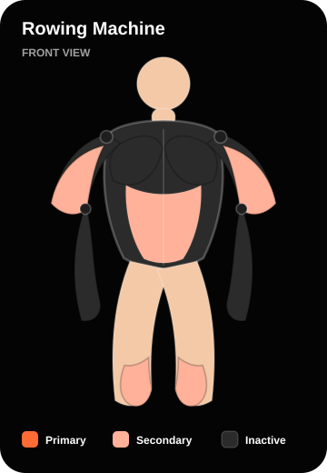
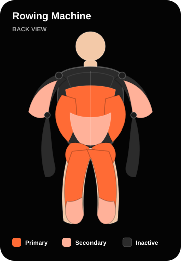
workouts/exercises/v1/rowing_machine/demo.lottie.jsonCat-Cow
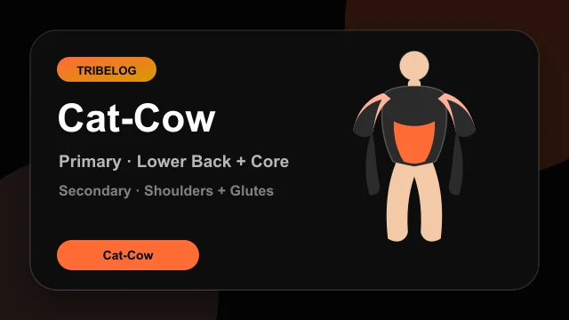
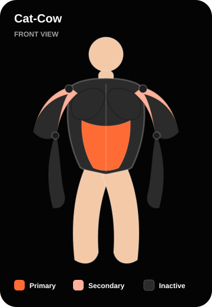
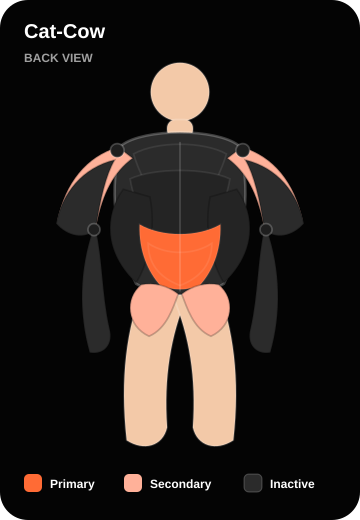
workouts/exercises/v1/cat_cow/demo.lottie.jsonDownward Dog
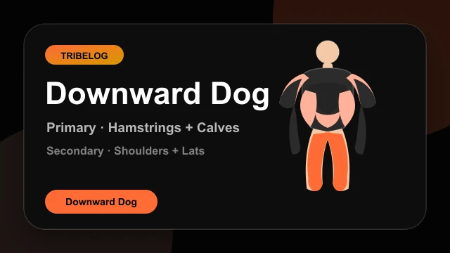
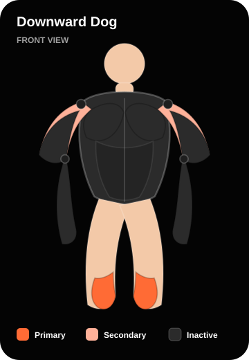
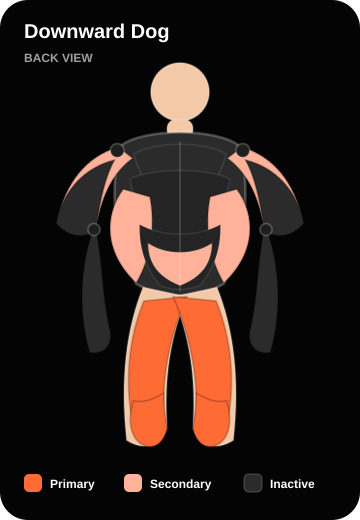
workouts/exercises/v1/downward_dog/demo.lottie.jsonChild's Pose
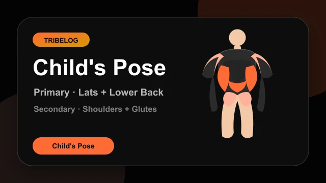
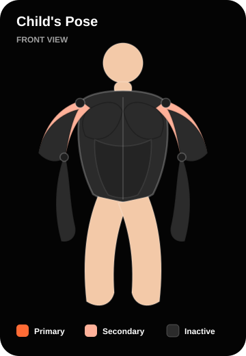
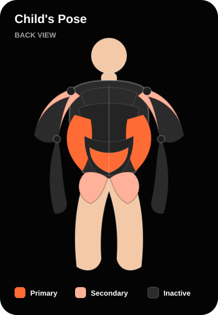
workouts/exercises/v1/childs_pose/demo.lottie.jsonWorld's Greatest Stretch
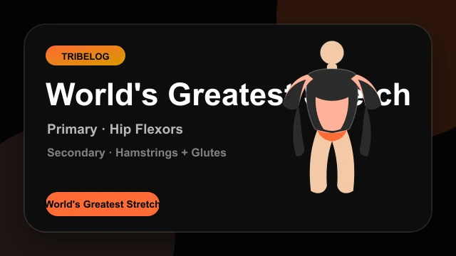
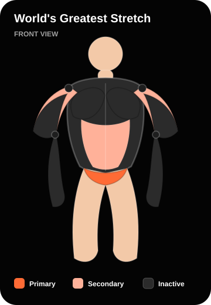
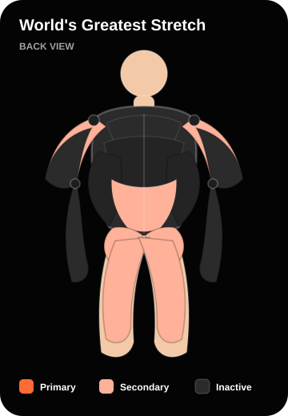
workouts/exercises/v1/worlds_greatest_stretch/demo.lottie.json